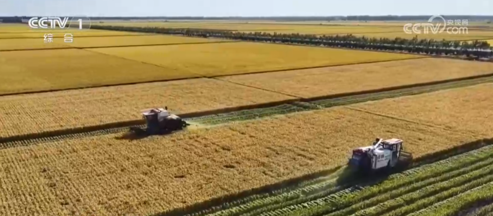
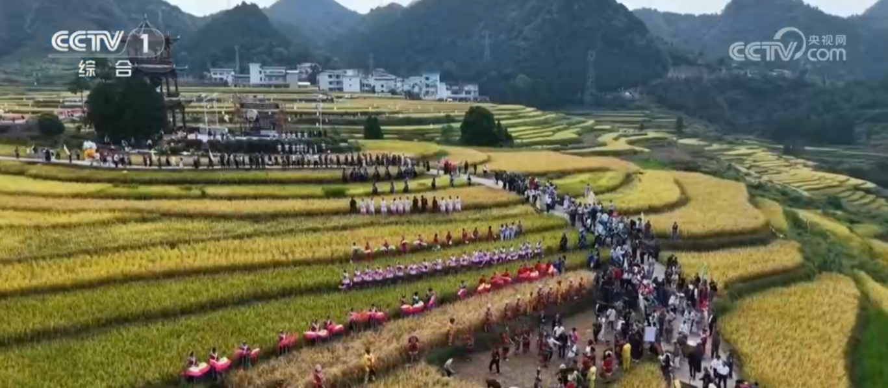
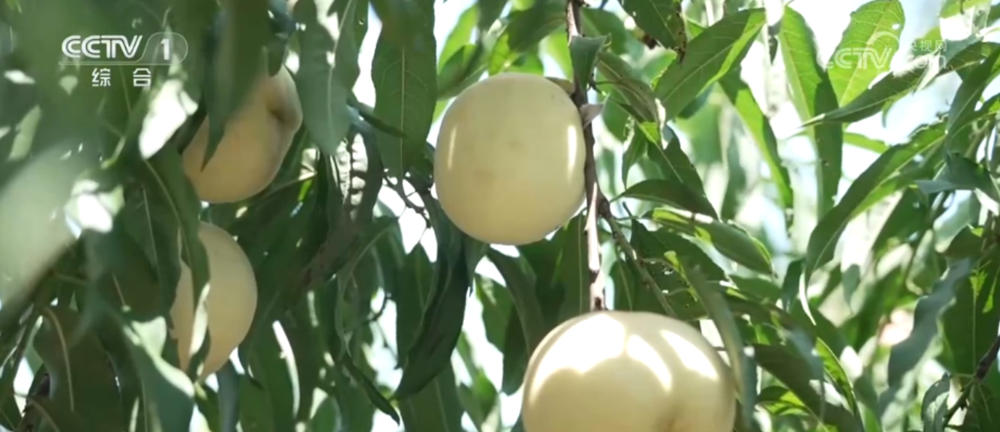
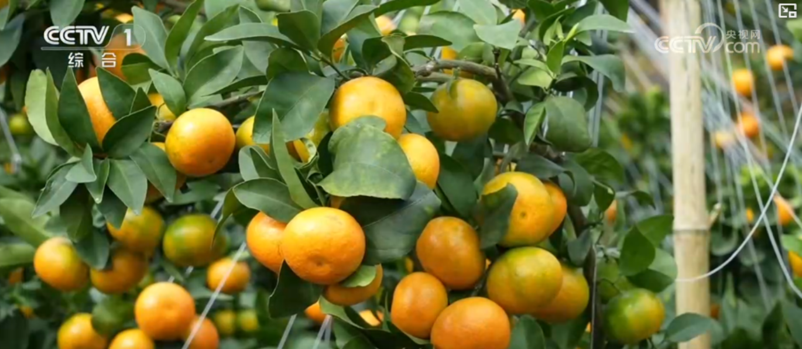

又是一年收获时！水稻开镰、瓜果飘香 广袤田野上绘就壮美丰收画卷
来源：央视网 | 2026年09月15日 11:58:52央视网消息：金秋时节，黑龙江、吉林等地的水稻陆续开镰，勾勒出壮美的丰收画卷。
万亩稻田勾勒出壮美丰收画卷

在黑龙江，农机在万亩稻田来回忙碌，收割过的稻田与待收的稻田深浅交错。
在绥化市北林区秦家镇，水稻良种繁育田面积30万亩，“绥粳系列”年推广面积更是稳稳站在千万亩以上。
田间地头一片忙碌的丰收景象
眼下，吉林省吉林市各地稻田也次第成熟。早稻迎来集中开镰收割，金灿灿的稻浪铺满乡野，农机穿梭作业、粮车往来转运，田间地头一片丰收忙碌的景象。2026年，吉林市粮食播种面积稳定在1000万亩以上，粮食产量力争达到98.5亿斤。
万亩梯田迎来丰收时刻 农事体验引游客

贵州玉屏侗族自治县亚鱼乡的万亩梯田这两天迎来丰收时刻，割稻竞速、手工打谷等农事体验活动还吸引了大量游客。
在希望的田野上·瓜果飘香
金秋还是瓜果飘香的时节，高品质的鲜果丰富了百姓的“果篮子”。
早熟冬桃采摘忙 错峰上市受欢迎
在安徽芜湖，早熟的冬桃迎来丰收采摘期。趁着晴好天气，种植户们忙碌采摘，抢抓上市最佳时机。

冬桃作为晚熟品种，一般3月开花、10月成熟，生长周期长达7个月。得益于长时间的糖分积累，形成了果大核小、脆甜多汁的特点，深受消费者喜爱。
红果缀枝喜丰收 七成海棠销海外
在新疆玛纳斯县，3600亩香妃海棠果迎来丰收。这里位于天山北麓中段，光热水土资源丰富，当地推行绿色生态种植模式，有效提升了海棠果的甜度、口感与品相，超七成海棠果远销海外。
早熟砂糖橘抢先迎来采收期

依托独特海拔气候优势，云南元江的早熟砂糖橘抢先迎来采收期，成片果林郁郁葱葱，圆润饱满的砂糖橘缀满枝头。
佛手集中采摘 药食观赏一果多用
重庆市大足区的5000余亩佛手迎来集中采摘期，漫山遍野的佛手果挂满枝头，空气中弥漫着淡淡的清香。佛手因果实顶端开裂如手指而得名，根、茎、叶、花、果均可入药，是药食同源的特色农产品。采摘下来的鲜果被迅速运往加工车间，一部分制成佛手干片供应药材市场，另一部分品相上佳的鲜果则精心包装发往各地，作为观赏用途。